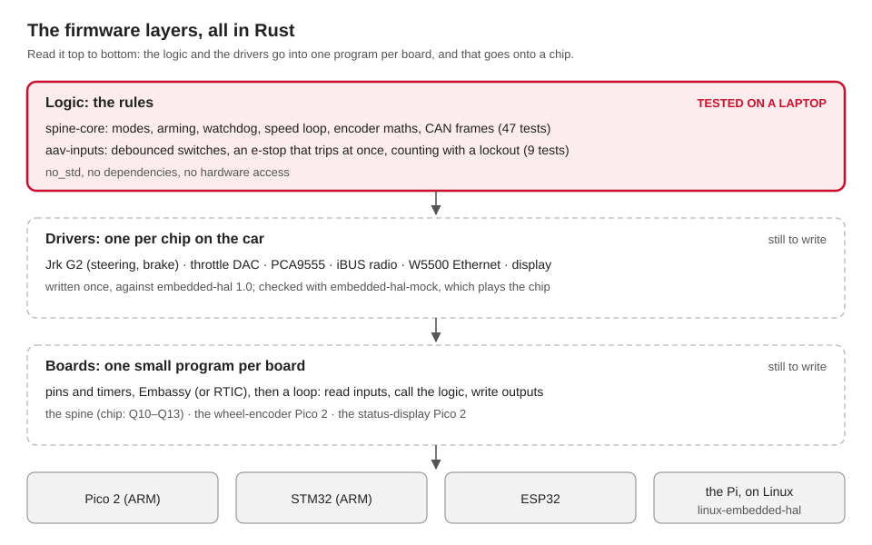

Ben's direction (10 October 2026): write the firmware and the hardware drivers in Rust, not C or C++, even where the ROS nodes above stay in Python. The 2025-26 C++ firmware keeps running today's car until a Rust version replaces each board. This page is the plan, and what's done so far.
Why Rust at this level
| Reason | What it means here |
|---|---|
| The same code on the chip and on a laptop | the logic is plain no_std Rust, so cargo test checks it on any laptop, with no board |
| Mistakes caught when it compiles | no stray pointers, no data races between an interrupt and the main loop |
| One driver for every board | a driver written against embedded-hal runs on an ESP32, a Pico, an STM32, and on the Pi under Linux |
| The spine is already Rust | spine-core: modes, arming, the watchdog, the speed loop, the CAN frames (71 tests), the drivers for its devices, and board programs for today's ESP32 and a Pico 2 |
What runs where
| Hardware | Runs | Rust there |
|---|---|---|
| ESP32, Pico 2 (RP2350), STM32, Arduino | bare metal: no operating system | a HAL for the chip, plus a small framework (below) |
| Raspberry Pi, Jetson Orin | Linux | ordinary Rust programs; drivers reach the pins through linux-embedded-hal (or rppal on a Pi) |
| Laptops | macOS or Linux | the tests, and the simulated hardware |
Bare metal on a Pi is possible, but it gives up Linux, ROS and the Pi's drivers. The Pi stays on Linux.
The layers

| Layer | What it is | Where | Tested by |
|---|---|---|---|
| Logic | the rules: modes, limits, debouncing, the encoder maths; the wheel encoder's packet; the status display's pages; the CAN wheel nodes | spine-core, aav-inputs, wheel-encoder, sentinel, wheel-core |
cargo test on a laptop |
| Drivers | one per chip on the car: the Jrk G2 motor controllers, the throttle DAC, the PCA9555 expander, the iBUS radio receiver, the MCP2515 CAN controller, the display's LCD | jrk-g2, ad5311, pca9555, ibus, mcp2515, hd44780, written against embedded-hal 1.0. Stock ones where they fit: embassy-net-wiznet (the W5500), max7219 (the 8x8 matrix) |
embedded-hal-mock, or a fake, which plays the chip on a laptop |
| Glue | spine-core's outputs to the devices, the devices to its inputs, in a safe order | spine-board, with a Board trait for what each chip must provide |
embedded-hal-mock |
| Boards | one small program per board: pins, timers, the framework, then a loop that calls the glue | firmware/spine/boards/: esp32-umod (today's ESP32 control board), pico2 (the spine, for the bench), wheel-encoder-pico2, sentinel-pico2 (below) |
they build in pixi run test (the ESP32 one where its toolchain is); the rest on the bench, then on the car |
firmware/spine/ is the Cargo workspace for the crates. Each board program in
firmware/spine/boards/ is a workspace of its own: it builds only for its chip, with that
chip's HAL.
The framework: the "RTOS" part
| Choice | What it is | Good for |
|---|---|---|
| Embassy (used) | an async framework for microcontrollers: tasks, timers, drivers that wait without blocking. The usual choice for new Rust projects in 2026 | every board here; it supports the RP2350, the ESP32 family (with esp-hal) and STM32. Both board programs use it |
| RTIC 2 | interrupt-driven tasks with fixed priorities, for hard real-time | Cortex-M chips (Pico 2, STM32), if a timing need appears that Embassy can't meet |
| FreeRTOS, through ESP-IDF | Espressif's operating system, with Rust's standard library | ESP32 projects that need its WiFi and web stacks |
| A plain loop | read, call the logic, write, repeat | the simplest boards |
The spine on today's ESP32 (15 Oct)
Ben, 15 October: "We should port all cpp to rust." In the KEFC plan
(CAN plan), the ESP32 control board already on the car becomes the spine.
firmware/spine/boards/esp32-umod is that board's program in Rust: the replacement for
the 2025-26 C++ in firmware/legacy/aav_umod_esp32. It builds; it has never been
flashed untested. Merged on 15 Oct at Ben's request; flashing waits for his go-ahead.
The C++ stays
The car runs `firmware/legacy/aav_umod_esp32` today. It stays in the repo, and on the
car, until the Rust program has been flashed and proven on the car
([First flash on the bench](esp32-bench.md)). Only then is the C++ removed.
one CommandLink trait (spine-board)
Motor-Pi ── UART, 13-byte frames ──► LegacyLink ─┐
├─► spine-core ─► spine-board ─► 2 Jrk G2, DAC, PCA9555
Orin ───── CAN, aav.dbc v0.2.0 ────► CanLink ────┘ (Spine::step) (I2C 21/22)
RC receiver ── iBUS, GPIO32 ─────────────────────────────┘| Feature | Link | For |
|---|---|---|
legacy-uart (default) |
the Motor-Pi's 13-byte frames on GPIO16 | today: a drop-in for the C++, with aav_legacy unchanged |
can |
firmware/can/aav.dbc v0.2.0 on the ESP32's TWAI controller, 500 kbit/s |
the KEFC plan: spine_bridge on the Orin. Its pins are unknown (below) |
estop-input (off) |
the e-stop's spare contact on GPIO27 | once it is wired (Q6) |
DBC v0.2.0 (merged 15 Oct) adds the wheel frames 0x200 and 0x201 and a 100 ms timeout;
spine-core uses the 100 ms on both links (the bridges send at 50 Hz). Still to do: on
CAN, read those frames as this board's wheel speed, so its speed loop closes. Today it runs
open loop.
What runs on it
| Part | How |
|---|---|
| The brain | spine-core's Spine::step, every 10 ms, on Embassy (esp-rtos 0.4, esp-hal 1.2) |
| The devices | spine-board: the same two Jrk G2s, the DAC and the PCA9555, on the same I2C bus at 100 kHz |
| The Motor-Pi's frames | legacy-link (new crate): the frame, the C++'s resync, the C++'s Jrk and DAC targets |
| The RC receiver | ibus, on UART2, read from its 128-byte FIFO each tick |
| The wheel speed | none on this board (the encoder talks to the Motor-Pi): the speed loop runs open loop, throttle = speed / 3.0 m/s (SpeedFeedback::None, new in spine-core) |
| The chip's own watchdog | TIMG1, 100 ms, fed after every tick: a hang or a panic resets the chip |
| The log | the USB cable, 115200 baud: a STATUS line every 200 ms |
Size: 132 KB image (3 % of the 4 MB flash); 9.5 KB of fixed RAM.
The pin map
The same pins as the C++ (hardware_configs.h, main.cpp). The program's copy is
src/pins.rs: change both together.
| GPIO | MicroMod pad | Signal | Goes to | In the C++ |
|---|---|---|---|---|
| 16 | 19 | UART1 RX, 115200 | Motor-Pi TX: the frames | the same |
| 17 | 17 | not driven | Motor-Pi RX | set up as TX, never used |
| 32 | 73 | UART2 RX, 115200, pull-up | FlySky iBUS | the same |
| 21, 22 | 12, 14 | I2C SDA, SCL, 100 kHz | Jrk steer 0x05, Jrk brake 0x04, DAC 0x0C, PCA9555 0x20 | the same |
| 2 | — | output | status LED: slow blink = computer drives, fast = it doesn't | on at boot |
| 18, 19, 14 | 57, 61, 10 | outputs | red = a fault, green = computer drives, blue = RC drives | red, green: WiFi; blue unused |
| PCA9555 P00 | — | the direction | the motor controller: high = forward | the same |
| 25, 26 | 42, 44 | TWAI TX, RX (can) |
unknown needs you | none |
| 27 | 18 | input, pull-up (estop-input) |
unknown (Q6) needs you | none |
Where does the CAN transceiver connect?
SparkFun's schematic of the ESP32 MicroMod has **no net on MicroMod's CAN pads**
(41, 43). If the carrier wires U7 to those pads, CAN never reaches the ESP32. Find
where U7's TXD and RXD go before using `can`. GPIO 25 and 26 are free, and are a guess.
The toolchain (installed 15 Oct)
The ESP32 is Xtensa: the stock Rust, and Pixi's, can't build for it. pixi run esp-tools
installs Espressif's, for one user, with no admin rights. It needs rustup.
| What | Version | Where | Size |
|---|---|---|---|
espup, the installer |
0.18.0 | vendor/cargo-tools/bin (git ignores it) |
10 MB |
espflash, the flasher |
4.3.0 (4.4+ need rustc 1.95) | vendor/cargo-tools/bin |
10 MB |
Xtensa Rust, toolchain esp |
1.97.0.0 | ~/.rustup/toolchains/esp |
1.4 GB, with the next two |
| Xtensa GCC (the linker) | 16.2.0_20260914 | ~/.rustup/toolchains/esp/xtensa-esp-elf |
|
| Espressif's LLVM libraries | esp-21.1.3_20260408 | ~/.rustup/toolchains/esp/xtensa-esp32-elf-clang |
|
| The two environment variables | — | vendor/esp/export-esp.sh (LIBCLANG_PATH, PATH) |
The board's rust-toolchain.toml picks esp; tools/esp32.sh reads the export file.
| Command | Does |
|---|---|
pixi run esp-tools |
installs all of the above (once; several minutes) |
pixi run esp-build |
builds the default (Motor-Pi UART) program |
pixi run esp-build --no-default-features --features can |
builds the CAN one |
pixi run esp-flash |
builds, flashes the board on the USB cable, shows its log: bench only |
tools/test.sh |
also builds both, with clippy, where the toolchain is; "skipped" where not |
Proof it speaks the C++'s language
Three witnesses agree on 21 frames and a noisy byte stream
(firmware/spine/crates/legacy-link/vectors.json):
| Witness | Checked by |
|---|---|
legacy_protocol.py made the bytes (what the Motor-Pi sends) |
gen_vectors.py; aav_legacy's tests check the file is current |
the 2025-26 C++ itself: ros2_handler.cpp and jrk_g2.cpp, compiled on the laptop with stand-in Arduino headers |
tools/tests/test_legacy_cpp.py, with and without fused multiply-adds |
the Rust legacy-link crate |
cargo test -p legacy-link (tests/vectors.rs) |
All three give the same steering and brake targets and DAC code for each frame.
spine-board's tests then drive frames through the whole loop and check the same targets
reach the fake I2C bus. The steering goes through radians and back: every target from 400
to 3500 survives the round trip (tested).
The C++ beside the Rust
Every behaviour of aav_umod_esp32, and where it is now. ⚠️ = different: Ben decides.
| C++ behaviour | Where | Rust | |
|---|---|---|---|
| Frame: 13 bytes, 3 × f32 LE, sum checksum | ros2_handler.cpp |
legacy-link::Frame |
same |
| Resync: bad sum drops one byte | ros2_handler.cpp |
legacy-link::Parser |
same |
| Values outside -1..1 turned down, DAC ramps to 0 | ros2_handler.cpp |
LegacyLink: the last command, throttle 0 |
same |
| Steering: 1950 + s × 1950 (s ≤ 0) or × 1550; clamped 400..3500 | ros2_handler.cpp, setSteer() |
Frame::targets, then radians, then the same target |
same target; ⚠️ reached at 0.6 rad/s (spine-core's steering rate limit), not at once |
| Brake: accel < -0.05 → clamp(|a| × 3500, 400, 3500), DAC cut at once | ros2_handler.cpp |
Frame::targets → DirectCmd |
same |
| Throttle: |v| < 0.03 → ramp to 0; else DAC |v| × 700, direction from the sign | ros2_handler.cpp |
Frame::targets → DirectCmd |
same code; ⚠️ ramp up 600 codes/s (C++: 6 a frame = 300/s at 50 Hz), down at once (C++: 12 a frame) |
| Direction pin set before the throttle, even while it runs | ros2_handler.cpp |
spine-board: only with the DAC at 0 |
⚠️ safer: fixes bug 5 |
| No command timeout: the last throttle stays on | — | spine-core: 100 ms (CAN v0.2.0), then throttle 0 and full brake | ⚠️ new. The bridge sends 50 Hz |
| Drives on the first frame after boot | — | spine-core boots latched: a stop frame (accel < -0.05) first, then drive frames | ⚠️ new. The bridge sends stop frames whenever ego is stale, so this happens by itself |
| After a timeout, frames drive again at once | — | latched until a stop frame | ⚠️ new |
| RC override: CH6 (index 5) between 1500 and 2200 | main.cpp |
ibus::RcMap::TODAY |
same |
| RC sticks: CH3 throttle, CH4 steering, CH5 gear: forward < 1200 < brake < 1800 < reverse | rc_handler.cpp |
RcMap::TODAY |
same channels and thresholds |
| RC throttle: stick × 1023, capped at 700 (the top third of the stick does nothing) | rc_handler.cpp |
stick × 3.0 m/s, open loop: stick × 700, reverse capped at 1.0 m/s (233) | ⚠️ the whole stick works; reverse is slower |
| RC gear on brake: DAC ramps down, brake full | rc_handler.cpp |
spine-core RC_GEAR_BRAKE = SpeedZero: speed to 0, then the hold brake (0.3) |
⚠️ open choice (docs/firmware.md) |
| RC stick released in forward or reverse: coast, brake released | rc_handler.cpp |
speed to 0, then the hold brake (0.3) | ⚠️ |
| RC sticks out of range: safe stop, steering centred | rc_handler.cpp |
RC drives, asks for 0 speed, straight wheels | ⚠️ |
| RC receiver silent: the last values stay (no timeout) | IBusBM |
100 ms: lost; full brake | ⚠️ safer: fixes bug 2 |
| Frames pile up during RC, run after it | main.cpp |
read every tick; RC wins while on | ⚠️ fixes bug 6 |
| E-stop | none: the button cuts power on its own | the button still does; estop-input reads a spare contact, once wired |
⚠️ off until Q6 |
| Startup: WiFi first (up to 10 s), then DAC 0, steering 1950, brake 3500 | setup() |
within milliseconds: DAC 0, brake 3500, expander, steering 1950 | ⚠️ faster: the actuators are safe sooner |
| Brake while nobody drives: full (3500) | setup() |
full: this board sets idle_brake = 1.0 |
same, on purpose. spine-core's proposed IDLE_BRAKE is 0.0; this board keeps the C++'s value until the team decides, because it has no e-stop input yet |
| Steering on a stop | jrkSafeStop(): centred |
spine-core ESTOP_STEERING = Hold |
⚠️ open choice |
| Expander: all 16 pins outputs, high | setup() |
the same (Calibration::TODAY) |
same |
| A Jrk missing at boot: skipped for good, the car still drives | setup() |
tried every tick; its fault stops the car | ⚠️ safer: fixes bug 3 |
| Jrk errors, DAC errors: printed | jrk_g2.cpp, dac.cpp |
fault bits: the car stops until the next stop-then-drive | ⚠️ safer |
| Hardware watchdog | none | 100 ms | ⚠️ new |
| WiFi, the status web page, the WebSocket log, the I2C scan page | web_handler.cpp |
gone | ⚠️ the log is on the USB cable |
| OTA update page, no password | main.cpp |
gone: flash on the USB cable | ⚠️ safer |
| Status line every 200 ms | publishStatus() |
STATUS mode=… throttle=… brake=… faults=… |
⚠️ another format; nothing parses it |
| Nothing sent back to the Motor-Pi | — | nothing | same |
For Ben to decide
| # | Question | Now |
|---|---|---|
| 1 | Where U7 (the CAN transceiver) reaches the ESP32 | GPIO 25/26, a guess |
| 2 | The e-stop's spare contact: which pin, normally closed? (Q6) | not read |
| 3 | IDLE_BRAKE on this board: keep the C++'s full brake, or spine-core's 0? |
full brake |
| 4 | Steering rate limit on the UART link: keep 0.6 rad/s, or pass targets at once like the C++? | 0.6 rad/s |
| 5 | Throttle ramp: 600 codes/s up (twice the C++'s on the UART link) | 600/s |
| 6 | The RC changes above: the gear's brake position, a released stick, reverse speed | spine-core's defaults |
| 7 | FULL_THROTTLE_SPEED 3.0 m/s, the same guess as legacy.yaml (Q4) |
3.0 |
| 8 | Remove the C++ once the Rust is proven on the car | kept |
What is untested
| What | Why | Next |
|---|---|---|
| Everything on the real ESP32 | never flashed | the bench plan |
| The FIFO reads keeping up | a tick takes a few ms of I2C; the FIFO holds about 28 ms of iBUS | watch for RC dropouts in the log |
| The watchdog reset | TIMG1's watchdog, never seen to fire | hang the loop on purpose, on the bench |
| CAN | the pins are unknown | find U7's wiring, then a USB-CAN adapter |
The spine on a Pico 2 (11 Oct)
firmware/spine/boards/pico2 runs spine-board and spine-core on a Raspberry Pi Pico 2,
with Embassy 0.10. It talks plain CAN to spine_bridge through an MCP2515 module. It is
for the bench: the car's chip is still Q10–Q13. untested on a real Pico 2.
| Part | How |
|---|---|
| The spine's loop | SpineBoard::tick every 10 ms |
| CAN | the MCP2515 on SPI, 500 kbit/s, polled each tick; tried again every second while it doesn't answer |
| Steering, brake, throttle, direction | the two Jrk G2s, the DAC and the PCA9555 on one I2C bus |
| The RC receiver | iBUS on a UART; an interrupt fills a buffer, so no byte is lost while a tick waits on I2C |
| The wheel | two spoke sensors, read every millisecond by a task that interrupts the loop |
| Arming, the 100 ms command watchdog | spine-core, as on the bench: it boots latched, and drives only once ROS disarms, then arms |
| The chip's own watchdog | fed after every tick: a hang or a panic resets the chip within 100 ms, into the safe state |
Size: 60,164 bytes of flash (of 4 MB) and 2,796 bytes of fixed RAM (of 512 kB).
The pin map
The one list of the Pico 2's pins. src/main.rs assigns them in this order: change both
together.
| Pin | GPIO | Signal | Goes to | Notes |
|---|---|---|---|---|
| 21 | GP16 | SPI0 RX | MCP2515 SO | 4 MHz SPI |
| 22 | GP17 | chip select | MCP2515 CS | |
| 24 | GP18 | SPI0 SCK | MCP2515 SCK | |
| 25 | GP19 | SPI0 TX | MCP2515 SI | |
| — | — | — | MCP2515 INT | not wired: the program polls the chip |
| 6 | GP4 | I2C0 SDA | both Jrk G2s, the DAC, the PCA9555 | 100 kHz, as today. Pull-ups to 3.3 V |
| 7 | GP5 | I2C0 SCL | the same four | |
| 12 | GP9 | UART1 RX | the FlySky receiver's iBUS output | 115200 baud, receive only |
| 20 | GP15 | e-stop input (pull-up) | a spare, normally closed contact of the red e-stop, to ground | high = pressed, or the wire cut. Read only |
| 14 | GP10 | wheel sensor A (pull-up) | the first spoke sensor | counts on its rising edge |
| 15 | GP11 | wheel sensor B (pull-up) | the second spoke sensor | gives the direction (Q5) |
| — | GP25 | the board's LED | what it says: below | |
| 36 | 3V3 OUT | 3.3 V | a 3.3 V MCP2515 module, the I2C pull-ups | |
| 3, 8, 13 … | GND | ground | every module's ground | one common ground |
| — | USB | power | a laptop, on the bench |
Wiring rules
- The e-stop (decided, Ben). The red button always stops the car, whatever the program does. It stays wired as it is. The spine only reads a spare contact, and tells ROS. Nothing of the spine's is in the button's path, and no output is in series with it.
- The MCP2515 module. Use one made for 3.3 V, such as an MCP2515 with an SN65HVD230. The common blue module (with a TJA1050) runs at 5 V, and its SPI levels don't suit the Pico 2's 3.3 V without changes. Which module the team has: untested.
- 5 V signals. The Pico 2's pins take 5 V only while the Pico 2 is powered. Pull the I2C bus up to 3.3 V, not 5 V.
- The crystal. Read the can on the MCP2515 module: "8.000" or "16.000". Set
CAN_CRYSTALto match (it is 8 MHz now).
Settings
In firmware/spine/boards/pico2/src/main.rs. The three choices the team still has to
make are in spine-core (firmware/spine/README.md).
| Constant | Set to | Change it when |
|---|---|---|
CAN_CRYSTAL |
Crystal::MHZ_8 |
the module's crystal is 16 MHz |
CAN_MODE |
Mode::Normal |
Mode::Loopback checks the SPI wiring with no bus at all |
ESTOP_OPEN |
Level::High |
the spare contact turns out normally open (Q6) |
TICK, WATCHDOG |
10 ms, 100 ms | only with the team: spine-core expects them |
Build and flash
Everything is in Pixi; nothing to install by hand.
| Step | Command | What happens |
|---|---|---|
| 1. Build | pixi run spine-uf2 |
builds the program, and writes firmware/spine/boards/pico2/spine-pico2.uf2 |
| 2. Flash, with a USB cable | hold BOOTSEL, plug the Pico 2 in, let go | a drive called RP2350 appears: copy the .uf2 onto it. The Pico 2 restarts into the spine |
| or 2. Flash, with a debug probe | pixi run spine-tools (once), then pixi run spine-flash |
flashes through the probe, then prints the program's logs |
- The UF2 file comes from
tools/elf2uf2.py. It uses the RP2350's family ID (rp2350_arm_s, datasheet 5.5.3) and refuses a program without its IMAGE_DEF block in the first 4 kB, or the boot ROM wouldn't start it (5.9.5).pixi run testchecks the real program each time. spine-toolsinstalls probe-rs 0.32.0 intovendor/cargo-tools/bin(about a minute). A probe: the Raspberry Pi Debug Probe, or a second Pico runningdebugprobe, on the Pico 2's SWD pins. On Linux, probe-rs needs its udev rules (probe.rs, "Probe setup").- The logs only come through a probe. With the UF2 file alone, the LED is all you see.
| The LED | Means |
|---|---|
| a slow blink: 0.5 s on, 0.5 s off | running, and CAN is up |
| a fast blink: 0.1 s on, 0.1 s off | running, but no CAN: the RC transmitter still drives, the computer can't |
| off, or on and still | not running: no program, the boot ROM (BOOTSEL), or resetting |
What is untested
| What | Why | Next |
|---|---|---|
| Everything on a real Pico 2 | no board here; flashing waits for Ben | the bench |
| The UF2 file booting | it matches llvm-objcopy's image byte for byte, and its IMAGE_DEF is checked; no boot ROM has seen it |
the first flash |
spine-flash |
probe-rs is installed and knows the RP235x; never run with a probe | the first flash with a probe |
| The chip's watchdog reset | embassy-rp 0.10 sets the RP2040's reset bits on an RP2350, so the program sets the Pico SDK's instead (reset_all_but_the_oscillators) |
hang the loop on purpose, on the bench |
| CAN on a real bus | needs the module, a USB-CAN adapter, and spine_bridge on SocketCAN (Linux) |
the bench |
| I2C to the Jrks, the DAC and the expander | needs the car's boards | the bench, then the car |
| The wheel sensors | which is A, and what B's level means (Q5) | the team |
| The e-stop's spare contact | normally closed? (Q6) | the team |
| A Pico 2 that once had a partition table | an A2 chip refuses drag-and-drop then (RP2350-E10); a new Pico 2 has none | use the probe |
The wheel encoder on a Pico 2 (15 Oct)
firmware/spine/boards/wheel-encoder-pico2 replaces the 2025-26 C++ wheel encoder
(Wheel_Encoders, Arduino). Same job, same pins, same packet: the Motor Pi's
encoder_udp reads it unchanged. Builds; never flashed.
IR sensor A ─┐ W5500 (SPI0)
IR sensor B ─┴─> SpokeSensors ─> Reporter ─> SpokeDelta ─────────────> UDP to 192.168.1.193:10111
(every 1 ms) (every 100 ms) 4 bytes, big-endian (encoder_udp, Motor Pi)| Part | How |
|---|---|
| The spokes | wheel-encoder's SpokeSensors, the spine's own rule: a count on A's rising edge, backwards if B rose in the last 20 ms; read every 1 ms by a task that interrupts the rest |
| The packet | every 100 ms: the spokes since the last one, a big-endian int32, byte for byte the 2025-26 one |
| Proof of the format | firmware/udp/wheel_encoder_vectors.txt: the Rust crate and aav_legacy's encoder_counts() both check the same 13 examples |
| Ethernet | the W5500 through embassy-net-wiznet 0.3 and embassy-net 0.9 (Embassy's IP stack); an address from DHCP |
| The chip's watchdog | 1 s, fed after each packet |
Setting (src/main.rs) |
Value | Same as 2025-26? |
|---|---|---|
MOTOR_PI |
192.168.1.193, port 10111 | yes |
LOCAL_PORT |
11101 | yes |
MAC |
54:65:6d:70:65:6c ("Tempel") | yes: a DHCP reservation for it still works |
SEND_EVERY |
100 ms | yes |
SPOKES_PER_REV |
8 (for the logs only) | yes |
Size: 66 kB of flash, 28 kB of RAM (the network's buffers).
Its pin map
| Pin | GPIO | Signal | Goes to | Notes |
|---|---|---|---|---|
| 4 | GP2 | sensor A | the first IR sensor | its module drives the line: no pull-up |
| 14 | GP10 | sensor B | the second IR sensor | the 2025-26 readme says "GP14"; its code says GP10 |
| 21 | GP16 | SPI0 RX | W5500 MISO | 50 MHz SPI |
| 22 | GP17 | chip select | W5500 CS | as in 2025-26 |
| 24 | GP18 | SPI0 SCK | W5500 SCK | |
| 25 | GP19 | SPI0 TX | W5500 MOSI | |
| 26 | GP20 | reset | W5500 RST | new: embassy-net-wiznet needs it |
| 27 | GP21 | interrupt | W5500 INT | new: the same |
| — | GP25 | the LED | on the board | a slow blink with an address, a fast one without |
WIZnet's Ethernet HAT for the Pico wires the W5500 to exactly these GPIOs. Another module needs RST and INT wired the same way.
Build and flash it
| Step | Command |
|---|---|
| Build | pixi run wheel-uf2: writes firmware/spine/boards/wheel-encoder-pico2/wheel-encoder-pico2.uf2 |
| Flash, USB | hold BOOTSEL, plug in, drag the .uf2 onto the RP2350 drive |
| Flash, probe | pixi run wheel-flash (after pixi run spine-tools once): shows the logs too |
| Check | on the Motor Pi, ros2 topic echo /vehicle/odom, or stop encoder_udp and run a UDP listener on port 10111 |
The status display on a Pico 2 (15 Oct)
firmware/spine/boards/sentinel-pico2 replaces the 2025-26 C++ status display, the
"sentinel" (AAV_cortex, Pico SDK). Same pins, same I2C packet. Builds; never
flashed. Nothing in our stack writes to it yet: the 2025-26 sender isn't in any repo
(docs/modules.md, question 3).
a computer ──I2C write, 46 bytes──> Pico 2 at 0x42 ──> sentinel crate ──> 16x2 LCD (13 pages)
^ │──────> 8x8 matrix (MAX7219)
knob, its switch, button ───┘ │──────> 10-LED bar
└──────> buzzer| Part | How |
|---|---|
| The packet | sentinel::telemetry: 46 bytes, little-endian, AA 01 first, an XOR checksum last; byte for byte the 2025-26 aav_telemetry_t |
| The LCD | an HD44780 16x2, 4-bit on six pins, through our hd44780 crate; a line is rewritten only when it changes |
| The matrix | a MAX7219 8x8 through the stock max7219 crate: drive mode and direction in turn, a cross for the e-stop, "!" for a lost link |
| The LED bar | the five computers and five ROS nodes that are up |
| The knob and the button | read every 1 ms, above everything else; one click is one page |
| The buzzer | its own task: a beep never holds the display up |
| The chip's watchdog | 0.5 s, fed every 5 ms loop |
Size: 67 kB of flash, 2.5 kB of RAM.
What changed from the 2025-26 one: boards/sentinel-pico2/PROVENANCE.md. The pages:
firmware/spine/crates/sentinel/README.md.
Its pin map
| Pin | GPIO | Signal | Goes to |
|---|---|---|---|
| 1 | GP0 | I2C0 SDA | the computer that sends the packets (internal pull-up on) |
| 2 | GP1 | I2C0 SCL | the same |
| 4 | GP2 | knob CLK (pull-up) | the KY-040 |
| 5 | GP3 | knob DT (pull-up) | the KY-040 |
| 6 | GP4 | knob switch (pull-up) | the KY-040: pin the page |
| 7 | GP5 | button (pull-up) | home |
| 9 | GP6 | buzzer | an active buzzer |
| 10 | GP7 | LCD RS | the HD44780 |
| 11 | GP8 | LCD E | |
| 12, 14, 15, 16 | GP9-GP12 | LCD D4-D7 | |
| 17 | GP13 | matrix CS | the MAX7219 |
| 19 | GP14 | SPI1 SCK | the MAX7219 CLK, 1 MHz |
| 20 | GP15 | SPI1 TX | the MAX7219 DIN |
| 34, 32, 31, 29, 27, 26, 25, 24, 22, 21 | GP28, 27, 26, 22, 21, 20, 19, 18, 17, 16 | LEDs 0 to 9 | Orin, Motor Pi, Radar Pi, UI Pi, Camera Pi; IMU, radar, lidar, camera, GPS |
| — | GP25 | the LED | on while the program runs |
Build and flash it
| Step | Command |
|---|---|
| Build | pixi run sentinel-uf2: writes firmware/spine/boards/sentinel-pico2/sentinel-pico2.uf2 |
| Flash, USB | hold BOOTSEL, plug in, drag the .uf2 onto the RP2350 drive |
| Flash, probe | pixi run sentinel-flash (after pixi run spine-tools once) |
| Check | it beeps three times, then once long; the LCD says "Waiting for Pi" and the matrix smiles |
What is untested on the two new boards
| What | Why | Next |
|---|---|---|
| Both, on a real Pico 2 | no board here | Ben, with a spare Pico 2 |
The W5500 through embassy-net-wiznet |
its RST and INT pins must be wired (GP20, GP21) | a WIZnet Ethernet HAT |
| DHCP and the packets reaching the Motor Pi | needs the car's network | the car |
| Sensor B on GP10 | the 2025-26 readme and code disagree | look at the board |
| The sentinel as an I2C device | embassy-rp's I2cSlave on an RP2350, and the sender |
a Pico 2, and any I2C master (a Pi: i2cset) |
| The LCD at 3.3 V | the HD44780 is often a 5 V part | the board |
| The knob's clicks | one full cycle a click is the usual KY-040; some give two | turn it |
The ESP32 boards of the KEFC plan (15 Oct)
The KEFC CAN plan keeps the car's own control board as the spine, and adds a wheel node on each front wheel. Both chips are Xtensa ESP32s.
CAN bus, 500 kbit/s
Orin ───────────┬─────────────────┬─────────────────┐
│ │ │
control board wheel node L wheel node R
ESP32 (MicroMod) ESP32-S3 (X2) ESP32-S3 (X2)
spine-core wheel-core wheel-core
spine-board Hall sensor Hall sensor| Board | Chip | Its logic, done and tested | Its board crate |
|---|---|---|---|
| The spine: the AAV control board | ESP32 (Xtensa LX6) | spine-core and spine-board: modes, arming, the 100 ms watchdog, the speed loop, the frames, the Jrk G2s, the DAC, iBUS |
written: boards/esp32-umod --features can (above). Its CAN pins are a placeholder until the schematic shows them |
| A wheel node: ESP32-CAN-X2 | ESP32-S3 (Xtensa LX7) | wheel-core: pulses and their times to a speed, the zero-speed timeout, the WHEEL_SPEED frame from spine-core's protocol |
still to write: boards/esp32s3-wheel |
What a board crate does
| Part | How, with esp-hal and Embassy |
|---|---|
| CAN | esp-hal's TWAI driver (the ESP32's built-in CAN controller), 500 kbit/s, an acceptance filter for our IDs. No MCP2515 needed |
| The loop | an Embassy task every 10 ms: the spine's SpineBoard::tick, or the wheel node's frame() |
| The Hall sensor | a GPIO interrupt (or the PCNT pulse counter) calls WheelNode::on_pulse(now_us) |
| The clock | embassy_time::Instant, in microseconds |
| Settings | constants in the board crate: pins, rotor holes, tyre radius. ROS never sees them |
| Safety | the chip's watchdog fed after every tick, as on the Pico 2 |
The toolchain
The ESP32 and ESP32-S3 are Xtensa, which stock Rust can't build for. pixi run esp-tools
installs Espressif's Rust and espflash for one user, at fixed versions (above, with
esp-build and esp-flash). The wheel node needs the esp32s3 target added to it:
vendor/cargo-tools/bin/espup install --targets esp32,esp32s3.
Like boards/pico2, each board crate is a workspace of its own, outside the default build:
pixi run test keeps working on a laptop without Espressif's Rust (it says "skipped"). The logic crates need nothing:
they already build and test with stock Rust.
What's left
| # | Step | Waits on |
|---|---|---|
| 1 | Write boards/esp32s3-wheel (DBC v0.2.0 is merged, 15 Oct) |
nothing |
| 2 | Count the rotor holes, measure the tyre radius; check the Hall sensor sees steel | the car |
| 3 | boards/esp32-umod --features can: the real CAN pins, from the control board's schematic |
the schematic |
The CAN bridge on the Orin, in Rust (23 Oct)
spine_bridge, the ROS node between ego and the CAN bus, has a Rust twin:
src/backends/aav_spine_bridge (PLAN.md T1.8). It packs and unpacks the frames with the
firmware's own spine-core code, so both ends of the bus share one implementation of
aav.dbc.
/ego/actuator_cmd, /safety/estop ──> spine_bridge ──> /can/tx ──> ros2_socketcan ──> can0
can0 ──> ros2_socketcan ──> /can/rx ──> spine_bridge ──> /vehicle/odom, wheels, status...
(the spine: 0x180, 0x181; the wheel sensors' Arduino: 0x200, 0x201)| Crates | spine-bridge: the logic, no ROS (arming edge, command timeout, e-stop, the wheel pairing, odometry). bridge-node: the rclrs node |
| The bus | the same /can/tx and /can/rx topics as the Python node: ros2_socketcan on the Orin (Linux); spine_sim on the bench and in Gazebo, so Macs work too |
| Tests | the Python node's test cases, and the shared vectors (firmware/can/test_vectors.json) through the whole bridge: cargo test -p spine-bridge |
| Checked, 23 Oct | bench-check: works with both bridges, the same results. sim-check --spine, on a Mac busy with other runs: both e-stops and arming pass with both bridges; the drive and Nav2 checks failed with both. Run it again on a quiet machine |
| Default | Rust since 23 Oct, in spine.launch.py, the bench and Gazebo's spine profile. bridge:=python runs aav_spine's node, kept until the Rust one has run on the car |
The wheel sensors are read by an Arduino (the hardware lead's board, Ben, 23 Oct), which
sends WHEEL_SPEED_L and WHEEL_SPEED_R as aav.dbc says; both bridges decode them the same way.
Today's boards, and their Rust versions
| Board (2025-26, C++) | Does | Rust version |
|---|---|---|
aav_umod_esp32 (ESP32) |
drives the actuators: steering and brake (Jrk G2), throttle (DAC), the RC receiver | boards/esp32-umod (15 Oct): the same board in Rust, with the Motor-Pi's UART or CAN. Builds; untested on the board. The C++ stays until the Rust is proven on the car |
| The wheel encoder (Pico 2) | counts wheel spokes, sends them over Ethernet | boards/wheel-encoder-pico2 (15 Oct). The C++ is gone from this repo; it stays on GitHub (Wheel_Encoders @ f824e9d805). The spine's Pico 2 can also read the sensors itself |
| The sentinel (Pico 2) | a status display | boards/sentinel-pico2 (15 Oct). The C++ is gone from this repo; it stays on GitHub (AAV_cortex @ 90de619e52) |
The car's two Pico 2s still run the C++ they were flashed with, until someone flashes the Rust.
Toolchains
| Chip | Rust target | In Pixi? | Flashing |
|---|---|---|---|
| Pico 2 (RP2350, ARM) | thumbv8m.main-none-eabihf |
works all thirteen crates and the three Pico 2 board programs build for it; pixi run test checks them |
its USB drive (pixi run spine-uf2, wheel-uf2, sentinel-uf2), or probe-rs (pixi run spine-tools) |
| STM32-class ARM (Cortex-M4F, M7) | thumbv7em-none-eabihf |
works the crates build for it too | probe-rs |
| ESP32-C3, C6 (RISC-V) | riscv32imc / riscv32imac |
missing not in Pixi; rustup has them |
espflash |
| Classic ESP32 (today's board) | xtensa-esp32-none-elf |
works not in Pixi: pixi run esp-tools installs Espressif's Rust for one user (above); tools/test.sh builds the board where it is |
espflash (pixi run esp-flash) |
| Arduino (AVR) | avr-* |
missing needs nightly Rust (avr-hal) |
ravedude |
An ARM chip (Pico 2 or STM32) keeps the whole toolchain inside Pixi. Ben said yes to one on 10 Oct; the team confirms the chip in Q10–Q13. For CAN, an STM32 has a CAN controller built in. A Pico 2 needs an add-on CAN chip: the MCP2515 on SPI, as above.
Done so far
| Crate | Does | Tests |
|---|---|---|
spine-core |
the spine's logic: modes, arming, watchdog, speed loop, encoder, CAN frames. Since 10 Oct, a stop brakes to a standstill instead of coasting (found on the bench). Since 11 Oct, the three open choices are one constant each. Since 15 Oct, open-loop commands (DirectCmd, for the UART link) and a speed loop with no wheel speed (SpeedFeedback::None). Since 15 Oct too, the 100 ms timeout and the wheel speed frames of CAN v0.2.0; one reverse speed, MAX_REVERSE_SPEED, from vehicle.yaml. Since 23 Oct, decode_report for the Orin's side (the Rust CAN bridge) |
71 |
aav-inputs (10 Oct) |
clean inputs for every board: a Debouncer for switches and buttons, with separate times each way (an e-stop trips at once, and must stay released before it counts), and a Lockout for counting fast signals such as encoder spokes |
9 |
jrk-g2 (10 Oct) |
the Pololu Jrk G2 over I2C: set target, stop, feedback, error flags. Checked against Pololu's guide | 14 |
ad5311 (10 Oct) |
the throttle DAC (an AD5311; TI's DAC101C081 takes the same bytes), capped at 700 of 1023 | 10 |
pca9555 (10 Oct) |
the 16-bit I/O expander: the direction output | 6 |
ibus (10 Oct) |
the FlySky receiver's iBUS frames, byte by byte; a silence timeout; the map to spine-core's RcInput, with the gear switch's brake position |
24 |
mcp2515 (11 Oct) |
the CAN controller a Pico 2 needs, over SPI: bit timing from the crystal, filters for our IDs, send, receive, error state and bus-off | 34 |
legacy-link (15 Oct) |
the 2025-26 UART link: the Motor-Pi's 13-byte frames, the C++'s resync, and the Jrk and DAC targets the C++ set, checked against the C++ itself | 31 |
spine-board (10 Oct) |
the glue: throttle off before the brake, the direction only at zero throttle, I2C errors as fault bits. The Board trait. Since 11 Oct, two spoke sensors counted the 2025-26 way (moved to wheel-encoder on 15 Oct). Since 15 Oct, the CommandLink trait: CanLink or LegacyLink |
57 |
wheel-encoder (15 Oct) |
the two spoke sensors, shared by the spine and the wheel encoder; the wheel encoder's UDP packet, checked against examples aav_legacy checks too |
12 |
sentinel (15 Oct) |
the status display: its I2C packet, 13 LCD pages, the knob, the beeps, the matrix, the link's watchdog | 40 |
hd44780 (15 Oct) |
the display's 16x2 LCD, 4-bit on GPIO pins | 5 |
boards/esp32-umod (15 Oct) |
the spine on today's ESP32 control board, with Embassy (above) | builds, clippy clean; untested on a board |
boards/pico2 (11 Oct) |
the spine on a Pico 2, with Embassy (above) | builds; untested on a board |
boards/wheel-encoder-pico2 (15 Oct) |
the wheel encoder, with a W5500 (above) | builds; untested on a board |
boards/sentinel-pico2 (15 Oct) |
the status display (above) | builds; untested on a board |
All are no_std, pass clippy and rustfmt, and build for the Pico 2 and STM32 targets.
tools/elf2uf2.py has 24 tests of its own.
Next
| # | Step | Waits on |
|---|---|---|
| 1 | The ESP32 program on the bench: First flash on the bench | Ben, and the answers in "For Ben to decide" |
| 2 | The car's spine chip: the ESP32 control board, if the KEFC plan holds | Q10–Q13 |
| 3 | The Pico 2 program on the bench: the LED, then CAN in loopback, then CAN to spine_bridge, then the I2C devices |
a Pico 2, an MCP2515 module, and Ben |
| 4 | Confirm the calibrations: steering centre and scale, brake range, throttle cap, RC channels | the car (Q1-Q7) |
| 5 | Tune the speed loop: on the bench it lags a ramp by about a second | the car |